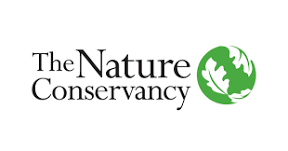
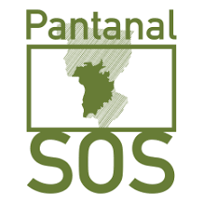
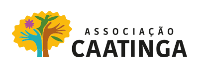

1 Síntese do projeto
1.1 Contexto geral do estudo
As mudanças no clima modificam ambientes naturais e pressionam espécies a se adaptarem às novas condições ambientais ou alterarem sua distribuição espacial para locais mais adequados climaticamente. Para o planejamento de ações de conservação e restauração é imprescindível a identificação de locais com potencial para sustentar a biodiversidade diante das mudanças climáticas previstas.
1.2 O que queremos fazer?
O objetivo principal do projeto é mapear áreas resilientes a mudanças climáticas, que são locais que potencialmente permitem a movimentação da biodiversidade na busca de áreas mais adequadas climaticamente ao nível da paisagem.
O termo áreas resilientes, neste contexto, indica locais com alta heterogeneidade microclimática e conectividade, condições necessárias para que espécies e processos ecológicos persistam às mudanças climáticas regionais.
1.3 Quais as premissas básicas desse estudo?
A metodologia desenvolvida segue três premissas básicas:
A heterogeneidade da paisagem resultante da combinação de características do meio físico (ex. feições topográficas, altitude, disponibilidade hídrica e tipo de solo) proporciona heterogeneidade de habitats para as espécies e variabilidade microclimática, aumentando a probabilidade de manter refúgios microclimáticos diversos para as espécies.
A conectividade local é determinada pelo grau de resistência oferecido pelos diferentes tipos de uso e cobertura do solo à potencial movimentação das espécies e por sua estruturação na paisagem.
A resiliência às mudanças do clima é influenciada tanto pela heterogeneidade da paisagem, que gera condições microclimáticas diversificadas para as espécies, quanto pela conectividade desses habitats na paisagem, que potencialmente permitem a movimentação desses organismos para áreas mais adequadas climaticamente.
1.4 Qual metodologia utilizamos?
A metodologia proposta combina a heterogeneidade da paisagem com a conectividade local, para identificar locais com variabilidade microclimática e cujas paisagens sejam potencialmente permeáveis à movimentação das populações.
O mapeamento da heterogeneidade da paisagem é baseado na geodiversidade (ex. geomorfologia, geologia, pedologia e hidrologia) e inclui a variedade de formas de relevo, amplitude altitudinal, índice de áreas úmidas e riqueza de solos.
A conectividade local é baseada no contexto espacial e na resistência das classes de uso e cobertura da terra ao potencial movimento das espécies, combinando classes naturais e antropizadas com maior ou menor grau de antropização (incluindo infraestruturas de transporte e de energia existentes).
1.5 Por que a escolha por essa metodologia de análise?
Essa análise foi proposta e validada para a América do Norte, pela The Nature Conservancy (TNC), e complementa metodologias baseadas em dados climáticos, uma vez que ela foca nas características do terreno para identificar áreas resilientes.
A aplicação da metodologia da TNC para os biomas brasileiros é um passo importante na identificação de áreas resilientes em ambientes tropicais megadiversos. Atuando em conjunto com especialistas dos diferentes biomas e baseado na literatura e bases de dados espaciais disponíveis, o projeto busca adequar a metodologia original ao contexto dos biomas brasileiros, refinando e adaptando quando necessário.
1.6 Onde e com quem trabalhamos?
O mapeamento foi conduzido para os seis biomas do Brasil. Para isso, em cada bioma foram selecionados coordenadores(as) responsáveis em instituições de pesquisa, além de um(a) pesquisador(a) de pós-doutorado diretamente envolvido(a) no projeto. Há ainda uma equipe de especialistas, de diversas áreas de atuação relacionadas à temática do projeto, que participam como colaboradores do desenvolvimento do estudo.
1.7 Quais são os produtos previstos neste projeto?
O produto resultante deste projeto é um mapa de áreas resilientes para os biomas do Brasil, que permite identificar o potencial relativo de cada área para sustentar a biodiversidade com o clima sob mudanças. Foi elaborado também um relatório técnico descrevendo o projeto e a metodologia utilizada, além de uma documentação reproduzível das análises. Além desses produtos, está prevista a elaboração de um artigo científico a ser submetido a uma revista científica internacional.
1.8 Como conduzimos as atividades?
Os(as) bolsistas de pós-doutorado foram responsáveis por liderar as análises e conduzir o projeto regionalmente. A equipe da TNC Brasil coordenou as atividades em cada bioma e entre os biomas e também a integração entre as diversas equipes, participando diretamente das discussões nos grupos. Foram realizadas oficinas e reuniões virtuais com a equipe do projeto e especialistas de cada bioma para discutir as particularidades regionais, refinar as análises e os resultados obtidos.
1.9 Palavras-chave
Resiliência climática, mudanças climáticas, conectividade, paisagem, geodiversidade, conservação, restauração, biodiversidade.
1.10 Instituições parceiras do projeto


